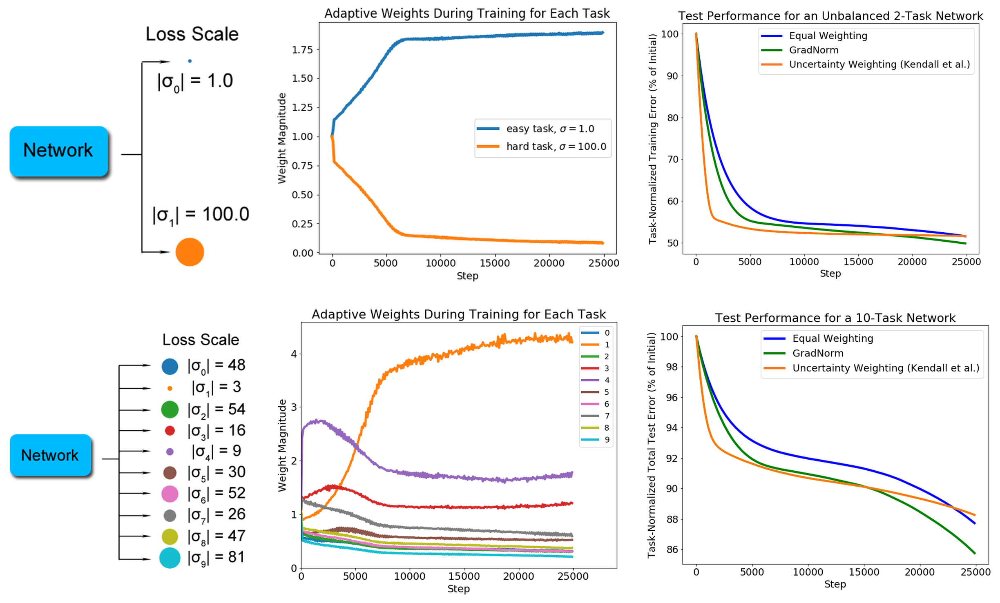

Learn one volume knob per task so every task trains at the same pace. No hand-tuning.
The intro page named three diseases that break the naive sum. The first medicine treats the first two, scale and speed: GradNorm watches how training is going and turns each task's volume until nobody is falling behind.
On this page
Picture several tasks sharing one trunk. Each task reports a loss, but the losses live on different planets: a depth loss near 800, a classification loss near 2. Add them up as-is and the big one shouts while the others whisper. And even after you fix the scales, one task can still dominate: its gradients are simply louder, so the shared weights move mostly for it. Hand-tuning a weight per task works, until the tasks' fortunes change mid-training and your tuned weights go stale.
It is a loss-weighting method: it changes how loud each loss is, before any gradient surgery.
The key fact: a task that dominates training necessarily expresses that dominance as large gradients. The classic case: one network learning segmentation, depth, and surface normals together.
I picture K coaches all shouting advice at one athlete, the shared trunk. The loudest coach, the one with the biggest gradient, is the only one the athlete hears, and the coach whose part of the training is nearly done keeps shouting anyway. GradNorm is the moderator in the room. It puts a volume knob in front of each coach and keeps turning the knobs so that (a) everyone is equally easy to hear, and (b) a coach whose part of the job is falling behind gets turned up for a while. There is even a strength dial for how hard the moderator pushes for equal progress.
Every training step, each task produces a gradient: a to-do list of changes to the shared weights that would help that task. If task 1's list is full of small numbers and task 2's is full of huge ones, the sum looks like task 2's list. GradNorm's answer: adjust the knobs a little every step using three measurements, taken at the last shared layer W, the spot where the fight actually happens (about 5% extra training cost).
Each task's loudness at each step: the length of the gradient of its weighted loss, measured at the last shared layer. The gradient of a weighted loss is just the weight times the gradient of the loss, so loudness is knob times raw gradient length. Turning the knob up makes the task louder by exactly that much. That is the lever GradNorm pulls. The average loudness across tasks is the reference volume everyone is compared against.
Measure how loud each task is right now: the size of its gradient flowing through the shared weights.
Here Gw(i) is task i's loudness, wi is the task weight, Li is task i's loss, ∇ is the gradient, W is the shared weights, ∥∥ is the norm, the length of, and · means times.
Current loss over initial loss: unit-free progress. The division is the point: a depth loss near 800 and a classification loss near 2 cannot be compared directly, but "how much of my journey is left?" means the same thing for both. A small ratio means the task learned fast, hence the name inverse training rate.
Current loss over initial loss: unit-free progress, written as an equation:
Here L̃i is task i's progress ratio, Li(t) is its current loss, and Li(0) is its initial loss.
Each task's progress ratio divided by the group average. A value of 1 means on pace; 0.5 means ahead; 1.5 means behind and needing attention. The problem is tasks falling out of sync, and you only spot that by comparing each task to the group: if all tasks move at the same speed, every value stays at 1 and GradNorm does nothing. It only acts when tasks drift apart.
Each task's progress ratio divided by the group average, written as an equation:
Here ri is how far behind task i is and K is the number of tasks. A value of 1 means on pace, 0.5 means ahead, and 1.5 means behind.
Each task gets a target loudness: the average loudness across tasks, boosted for whoever is behind. Two fixes in one rule. The average pulls everyone toward the same volume, curing the scale problem. The boost turns the volume up for tasks that are behind, curing the speed problem. A strength dial sets how hard the boost pushes.
Set each task's target loudness: start from the average loudness, then scale it up for tasks that are falling behind.
Here Ti is task i's target loudness, Ḡw is the mean loudness, ri is how far behind task i is, as defined by the two ratio equations in the measurements section, and α is how strongly falling behind pulls the target up.
Then a penalty: how far is each task's actual loudness from its target? Ordinary gradient descent on this penalty, but the things being adjusted are the knobs, not the network. Two details turn this from a guess into a thermostat:
Penalize the gap: add up how far each task's actual loudness is from its target. Minimizing this rebalances the tasks.
Here Lgrad is the rebalancing loss, Σi means add up over every task i, and | | is the absolute value, drop the sign.
K after every update. Without this, the penalty has a cheat: shrink all weights and every norm shrinks, so the penalty falls without anything being balanced. The fixed budget stops the cheat: one task can only get louder if another gets quieter, and the overall learning speed stays the same, so comparisons with baselines stay fair.Keep the total weight budget fixed: the task weights must always sum to the same constant, so turning one up means turning another down.
Here Σi wi = const is the fixed weight budget.
GradNorm is a thermostat, not a guess: it re-measures after every correction, so the starting weights do not have to be lucky.
# after the forward pass: losses = [L_1..L_K]; w = trainable task weights
G = [norm(grad(w[i] * losses[i], W)) for i in range(K)] # loudness per task
ratio = losses / losses_0 # progress so far, unit-free
r = ratio / mean(ratio) # who is behind the pack? (r > 1 = behind)
target = mean(G) * r ** alpha # average loudness, boosted for laggards
L_grad = sum(abs(G - target)) # how far each norm is from its target
w = w - lr_w * grad(L_grad, w) # nudge ONLY the weights
w = w * K / sum(w) # fixed budget: one task up, another downGradNorm runs as a loop every training step: measure, set targets, nudge the weights, renormalize, then measure again. Walk through one step below.
K.Gw(i) task i's loudness: its gradient size through the shared weightsTi task i's target loudnessḠw the mean loudnessΣi wi = const the fixed weight budgetwi the task weightsri how far behind task i is; α how strongly falling behind pulls the target upLgrad the rebalancing lossLi task i's loss‖‖ norm: length of· times: scaling| | absolute value: drop the sign∇ gradientW the shared weightsΣi add up over every task i1 is quiet and behind (loudness 3, progress 0.95), task 2 is loud and ahead (loudness 300, progress 0.40). Four steps turn task 1's weight up and task 2's down.1 and 2, weights in steps 3 and 4. Dashed lines mark the mean loudness (step 1), each task's target (step 2), and the fixed budget (step 4). Arrows mark the weight nudge (step 3).The experiment: two toy systems, one with 2 tasks (top row) and one with 10 (bottom row), each task's loss multiplied by a different scale. Left column: the network diagrams with their loss scales. Middle column: each task's weight over training. Right column: task-normalized test loss, GradNorm in green against equal weights in blue. Read the middle column first: the small-scale tasks' weights rise while the big-scale tasks' fall, exactly the rebalancing the simulation below replays. Then the right column: the green curve finishes below the blue one in both rows. Equalizing loudness is the entire mechanism.

Rebuilt from Figure 2 of Chen et al. (ICML 2018). arXiv:1711.02257
Figure 2, verbatim caption: "Gradient Normalization on a toy 2-task (top) and 10-task (bottom) system. Diagrams of the network structure with loss scales are on the left, traces of wi(t) during training in the middle, and task-normalized test loss curves on the right. α=0.12 for all runs."
2-task toy the easy task's weight rises toward 1.9 while the hard task's falls toward 0.1; in the 10-task toy every small-scale task's weight rises the same way.One shared trunk, two tasks, the second starting much louder.
The gap starts at 300:1 with the default scale, in both runs. GradNorm rebalances the weights early, and that is what frees the quiet task: by step 100 its loss is 0.653 with GradNorm while it is still stalled at 0.979 under equal weights.
(a) task 1 loss, the quiet one
(b) the knobs GradNorm turns (their sum is always 2)
2. The loss panel shows the payoff: the quiet task's loss falls toward its solo run. The dashed purple trail previews the opening of each full run.Two knobs. α is the strength dial on the behind-task boost: at 0 the progress meter switches off and only scale gets fixed; Start at 0.5 for similar tasks, 1 to 1.5 for dissimilar ones. λ_w is the learning rate of the weights themselves: 10 to 100× smaller than the network's rate. Loudness is measured at W, the last shared layer, by default.
Strength dial at 0: progress meter off
The behind task never catches up.
Strength dial at 0.5: steady rebalancing
The behind task climbs smoothly to its share.
Strength dial at 2.0: fast but noisy
Swings up harder and faster, overshooting on the way.
Reach for it when your tasks have very different loss scales or learning speeds. The classic case is dense prediction (segmentation + depth + normals).
Costs: one extra backward pass per task to get the per-task norms at the last shared layer, plus a second-order term through the penalty (the penalty is built from the gradients themselves, so training on it differentiates a derivative). Modest in practice.
Keep in mind: GradNorm is a heuristic with no convergence guarantee, and it says nothing about gradient direction. Two perfectly balanced gradients can still point against each other.
GradNorm sets the volume by watching pace: who is falling behind, right now. But pace is a symptom of training dynamics. What if the right volume is knowable before training dynamics even enter, from the data itself? Some tasks are just noisier than others, and a noisy task should count less. That is the Uncertainty page's whole idea.
The two volume knobs and the two steering methods, side by side:
| Method | The question it answers |
|---|---|
| GradNorm (this page) | How loud should each task be, to keep progress balanced? (learned, driven by training dynamics) |
| Uncertainty | How loud should each task be, given how noisy it inherently is? (learned, driven by the data) |
| PCGrad | How should the directions be edited so tasks stop fighting? |
| GradVac | How should each pair of tasks be nudged back to the agreement level where it learns best? |
| CAGrad | How do we protect the worst-off task and stay near the average, with a guarantee? |
| MGDA | What direction helps every task at once, and where does the run land on the Pareto frontier? |